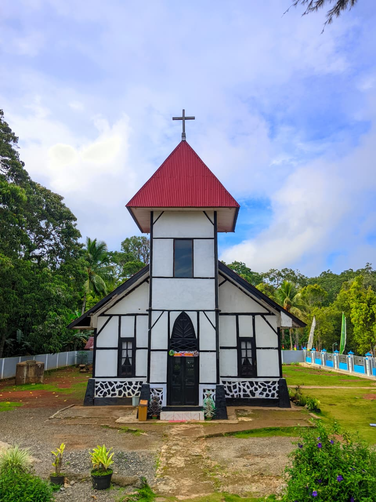
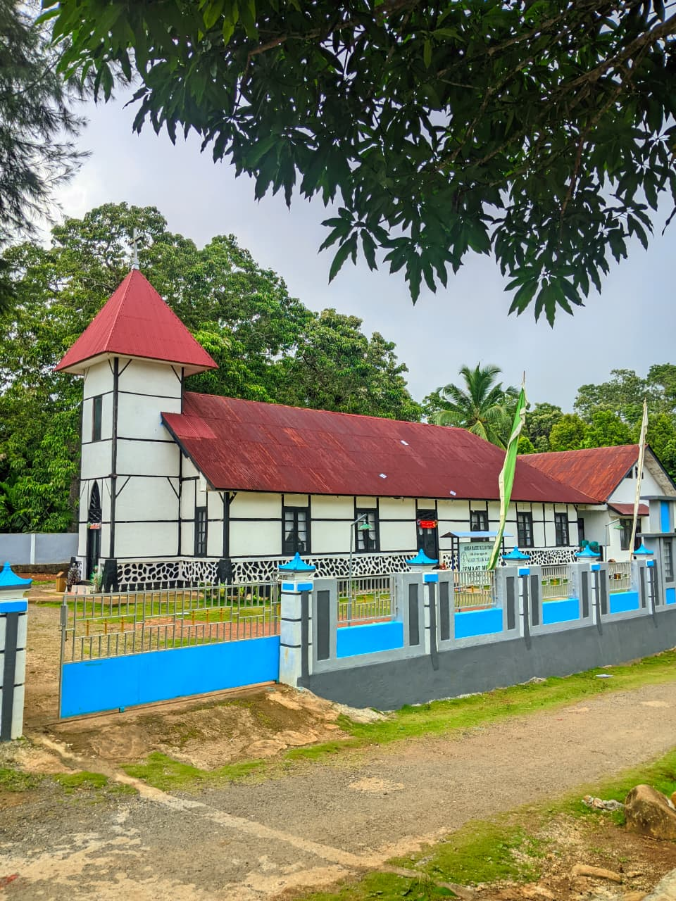

Galatia 6:9-10
"Jangan Jemu-Jemu Berbuat Baik"
(“Janganlah kita jemu-jemu berbuat baik, karena apabila sudah datang waktunya, kita akan menuai, jika kita tidak menyerah...”)
Selamat datang di
"Marilah kita masuk ke dalam rumah TUHAN." — Mazmur 122:1
Lihat jadwal ibadah
GMIT Moria Pitungbang adalah jemaat Gereja Masehi Injili di Timor yang bersekutu, bersaksi, dan melayani dalam kasih Kristus.
Dalam persidangan tahunan bulan April 1934, terjadi perdebatan tentang Doa Bapa Kami antara orang Pitungbang dan orang Adang. Yang diperdebatkan adalah kalimat Bapa Kami. Menurut bahasa Adang "O PIMANG LAHTAL", sedangkan menurut bahasa Pitungbang "O NIMANG LAHTAL". Karena masing-masing mempertahankan kalimat doa yang mau dipakai, perdebatan itu akhirnya berujung pada perpecahan.
Karena Pitungbang berpisah dari gereja Adang, pada tanggal 7 Oktober 1943 dibangunlah gereja di kampung Pitungbang dengan nama BET'EL (sekarang Moria). Tanggal dan bulan inilah yang setiap tahun kita peringati sebagai Ulang Tahun Gereja Moria Pitungbang.
Wilayah Jemaat Bet'el terdiri dari kampung Pitungbang, Aillelang, Dorbang, Alieng, Lendola, dan Bumol. Jemaat Bet'el berdiri atas persetujuan Pendeta Petrus Lakusa. Meskipun sudah berpisah dari gereja Adang, pelayanan sakramen tetap dilayani oleh pendeta dari gereja Adang sebagai gereja induk.
Pada tahun 1943, Dorbang, Alieng, dan Lendola memisahkan diri dari Gereja Bet'el Pitungbang dan mendirikan gereja kapela di Dorbang, yang diresmikan oleh penanggung jawab Bet'el, yaitu Bapak L.E. Duil, atas nama Kependetaan Adang. Dari Dorbang, gereja ini kemudian dipindahkan ke Lendola, yang sekarang menjadi Jemaat Ebenhaezer Hombol.
Pada tanggal 7 Oktober 1951, tepatnya pada ulang tahun jemaat Gereja Bet'el yang ke-22, diadakan upacara peletakan batu pertama untuk membangun gedung gereja. Batu pertama diambil dari mesbah dan diukir oleh Benyamin Lahal, Efraim H. Abor, Semuel Duka, dan B.Y. Bail, lalu ditulis 1 Korintus 3:11. Batu itu dipegang oleh Benyamin Tang yang berkata dalam bahasa Pitungbang: "Dulu kami ditugaskan untuk menjaga mesbah, tetapi sekarang batu ini kami serahkan untuk diletakkan sebagai batu pertama pembangunan gedung gereja."
Setelah itu batu diserahkan ke tangan Bapak Alelang Anie, lalu diteruskan kepada Pdt. B.I. Beli. Kebaktian peletakan batu pertama dipimpin oleh Pdt. B.I. Beli, lalu pekerjaan pembangunan mulai berjalan.
Catatan: Sejarah di atas hanyalah ringkasan singkat. Mohon maaf apabila terdapat kekeliruan atau perbedaan dengan sejarah yang sebenarnya.
2026
LAKUKAN KEADILAN,CINTAI KESETIAAN DAN HIDUP RENDAH HATI DI HADAPAN ALLAH
| Ibadah | Waktu | Tempat |
|---|---|---|
| Ibadah Minggu | Minggu, 08.00 WITA | Gedung Gereja |
| Ibadah Pemuda | Rabu, 19.00 WITA | Gedung Gereja |
| Ibadah Rumah Tangga | selasa, 19.00 WITA | Rumah jemaat |

Galatia 6:9-10
(“Janganlah kita jemu-jemu berbuat baik, karena apabila sudah datang waktunya, kita akan menuai, jika kita tidak menyerah...”)